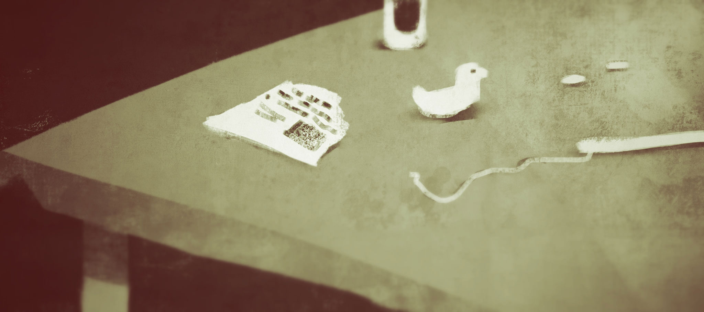
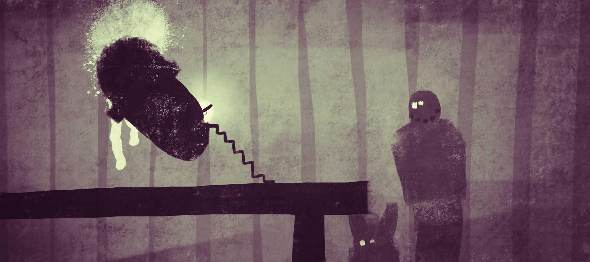
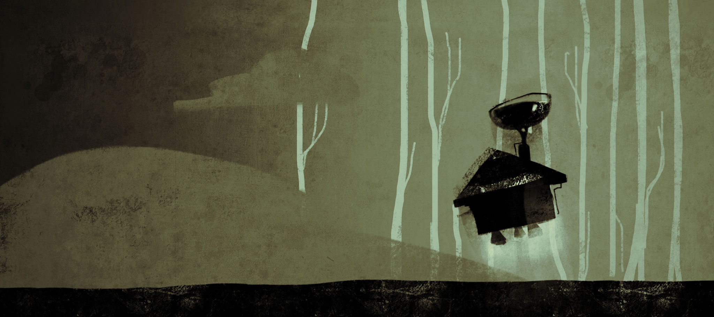
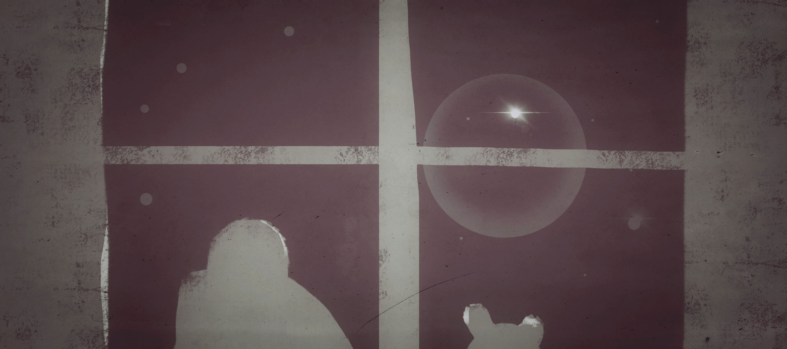

The man with the beard put another log into the fire. 'Quite cold already' he said, and handed bunny a cup of Mountain tea.
Grub it in
by Dirk Bathen, Valentin Heyde, Benjamin Rabe
Those were the first lines written by Dirk Bathen and Valentin Heyde in an experimental setup that would look like this: the three of us met on a thursday evening without any preparation, only equipped with a single aim – to write and illustrate a story. Together, collaboratively. Maybe drink some beer and see what happens. And what followed was a 3-hour tour-de-force between two writers and two fingerpainters.
'Mountain tea, you got to be be kidding. You know very well how much I hate it.'
Bunny moved the cup aside and soldered a yellow diode to the circuit board. Slowly this piece started to take shape. They would have an alarm clock at least. The man with the beard sipped his tea, and watched his fellow lodger doing his finger exercises. The tea almost melted his lips away. He held the cup to his cheeks, cooling it, and leaned back on his mahogany chair.
Waiting.
How did we start?
After getting together in the early evening, there was a short moment of shoegazing, not exactly knowing how to get going. So I pulled out a painting by Fabric Lenny he had sent me earlier.
That one kicked in. We started thinking about the characters now. 'Well, Beardman, I think he's the down to earth guy. Likes wood. Bunny? He's more into Chrome.' Momentarily, Dirk and Valentin started collaborating on a story using googleDocs, while I pulled out my iPad and started doodling.
"Hey Beardman, come here, you got to take a look at this."
“I do have quite a good look at you from where I sit, Bunny.” Beardman took another sip from his tea and adjusted in his chair to sit more comfortably.
Bunny stuffed the remaining cables back into the glistening device, considered the work and pressed the button with the bar on it. Beardman leaned forward and looked at the silver box expectantly. Nothing happened. "Figures", he said, got up, grabbed his axe and went outside. He was angry because his chopping block was blocked by this weird Airship cradle for days now. Bunny was saying he needed the space. Space for the air vehicle that was supposed to bring Bunny back to his home planet. It is the right thing to do, thought Beardman, but did this giant thing really have to keep him away from his chopping block? You can't tighten screws with the cold hand, and it's my responsibility to keep things warm here. Grimly he wound his way through the metal rods to chop new wood for the fire.
For the artwork i used procreate and I tried to keep up the speed with the wordy companions, which wasn't always easy. I quickly felt I had to go ahead a little and be a bit of a feeder, if I didn't want to end up trailing behind or slow the process down. Here's the whole batch plus some pieces by Fabric Lenny, who joined in over the evening, from his cozy home in the UK.
Bunny kneaded his temples till they folded, thinking. Pushed the button another time. Nothing. And to know that his whole project depended on this alarm clock. What other way to connect all circuits in a timely manner? If he already was failing getting this stupid clock to work, how would he ever get the spaceship into the air?
- 
- 
- 
- 

You can find the whole 14 pages (in German!) of the final story here.
So here's the recipe, if you - like me that time - think your creative juices have dried up a little: go find some artist from other fields and jam together. Don't worry too much about the setup or any outcome. Instead enjoy the process. Watch the others, because it's a great way to reflect on yourself. It also gave me a better understanding of the magic of the written word. Coming from the area of software developing, where storytelling is a way to look at interactions and how we create and use interfaces, where programming languages are our tools, this experimental evening made me realize that our spoken and written language is an amazing tool we all share and which let's us create (almost programme) stories inside the heads of others.